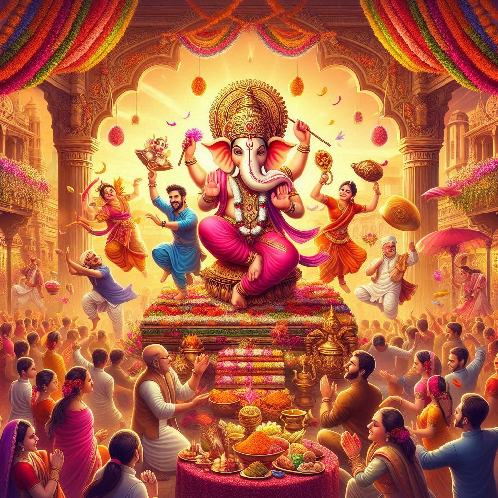
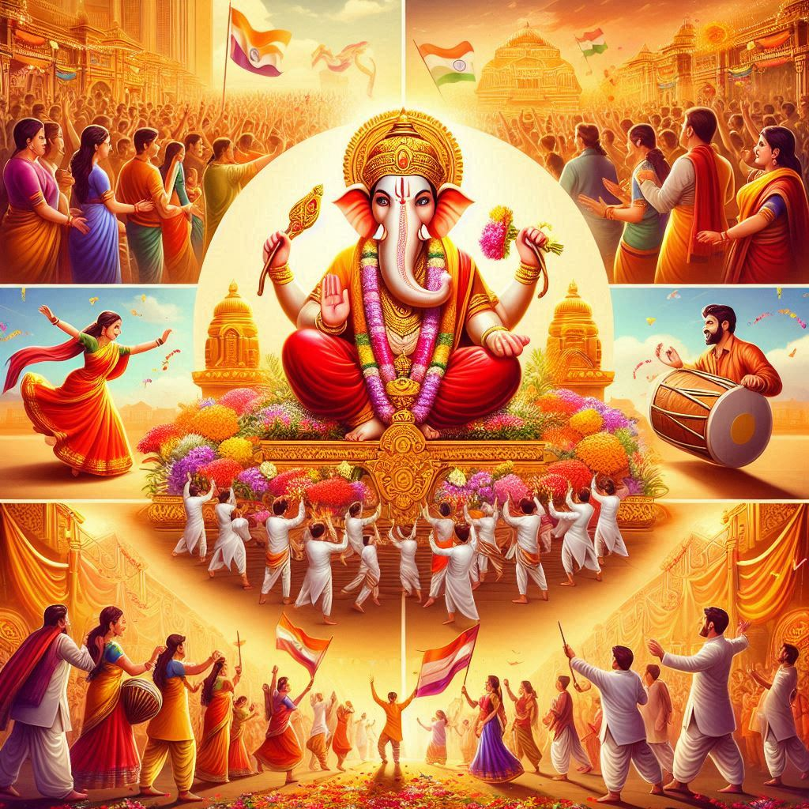

FESTIVALS
1. Ganesh Chaturthi
- Significance: Ganesh Chaturthi is one of the grandest and most popular festivals in Maharashtra...
- Celebrations: Idols of Ganesha are brought home or installed in public pandals...
2. Diwali (Festival of Lights)
- Significance: Like the rest of India, Diwali in Maharashtra is celebrated with much pomp...
- Celebrations: Homes are cleaned, decorated with rangoli...
3. Gudi Padwa
- Significance: This is the Marathi New Year, celebrated on the first day of Chaitra month...
- Celebrations: People raise a gudi outside their homes...
4. Makar Sankranti
- Significance: Celebrated in January, this festival marks the transition of the sun into Capricorn...
- Celebrations: People exchange sweets made of jaggery and sesame seeds...


5. Navratri and Dussehra
- Significance: Navratri is a nine-day festival dedicated to the worship of the goddess Durga...
- Celebrations: Devotional music, dance (like Garba and Dandiya Raas), fasting, and rituals...
6. Holi (Festival of Colors)
- Significance: Holi is celebrated to welcome spring...
- Celebrations: People smear each other with colors, dance, sing, and share sweets...
7. Krishna Janmashtami
- Significance: It marks the birth of Lord Krishna...
- Celebrations: The festival is famous for Dahi Handi...
8. Eid and Christmas
- Significance: Maharashtra's cosmopolitan spirit embraces all communities...
- Celebrations: Eid is celebrated with prayers, feasting, and charity...
9. Shivaji Jayanti
- Significance: Celebrating the birth anniversary of the great Maratha warrior, Chhatrapati Shivaji Maharaj...
- Celebrations: The day is marked with grand processions, speeches, reenactments of his valor...